Last updated: 2022-01-24
Checks: 6 1
Knit directory: ChromatinSplicingQTLs/analysis/
This reproducible R Markdown analysis was created with workflowr (version 1.6.2). The Checks tab describes the reproducibility checks that were applied when the results were created. The Past versions tab lists the development history.
The R Markdown file has unstaged changes. To know which version of the R Markdown file created these results, you’ll want to first commit it to the Git repo. If you’re still working on the analysis, you can ignore this warning. When you’re finished, you can run wflow_publish to commit the R Markdown file and build the HTML.
Great job! The global environment was empty. Objects defined in the global environment can affect the analysis in your R Markdown file in unknown ways. For reproduciblity it’s best to always run the code in an empty environment.
The command set.seed(20191126) was run prior to running the code in the R Markdown file. Setting a seed ensures that any results that rely on randomness, e.g. subsampling or permutations, are reproducible.
Great job! Recording the operating system, R version, and package versions is critical for reproducibility.
Nice! There were no cached chunks for this analysis, so you can be confident that you successfully produced the results during this run.
Great job! Using relative paths to the files within your workflowr project makes it easier to run your code on other machines.
Great! You are using Git for version control. Tracking code development and connecting the code version to the results is critical for reproducibility.
The results in this page were generated with repository version cc1c333. See the Past versions tab to see a history of the changes made to the R Markdown and HTML files.
Note that you need to be careful to ensure that all relevant files for the analysis have been committed to Git prior to generating the results (you can use wflow_publish or wflow_git_commit). workflowr only checks the R Markdown file, but you know if there are other scripts or data files that it depends on. Below is the status of the Git repository when the results were generated:
Ignored files:
Ignored: .DS_Store
Ignored: .Rhistory
Ignored: .Rproj.user/
Ignored: ._.DS_Store
Ignored: analysis/.Rhistory
Ignored: code/.DS_Store
Ignored: code/.Rhistory
Ignored: code/._.DS_Store
Ignored: code/._README.md
Ignored: code/._dag.pdf
Ignored: code/._report.html
Ignored: code/.ipynb_checkpoints/
Ignored: code/.snakemake/
Ignored: code/Alignments/
Ignored: code/ENCODE/
Ignored: code/ExpressionAnalysis/
Ignored: code/Fastq/
Ignored: code/FastqFastp/
Ignored: code/FastqFastpSE/
Ignored: code/FastqSE/
Ignored: code/Gather_gwas_summary_stats/
Ignored: code/Genotypes/
Ignored: code/Multiqc/
Ignored: code/Multiqc_chRNA/
Ignored: code/PeakCalling/
Ignored: code/Phenotypes/
Ignored: code/PlotGruberQTLs/
Ignored: code/ProCapAnalysis/
Ignored: code/QC/
Ignored: code/QTLs/
Ignored: code/ReferenceGenome/
Ignored: code/Session.vim
Ignored: code/SplicingAnalysis/
Ignored: code/TODO
Ignored: code/bigwigs/
Ignored: code/bigwigs_FromNonWASPFilteredReads/
Ignored: code/config/.DS_Store
Ignored: code/config/._.DS_Store
Ignored: code/config/ExternalFastqDataAccessions/
Ignored: code/config/OldSamplesConfig/
Ignored: code/dag.pdf
Ignored: code/featureCounts/
Ignored: code/gwas_summary_stats/
Ignored: code/hyprcoloc/
Ignored: code/logs/
Ignored: code/notebooks/.ipynb_checkpoints/
Ignored: code/out.hap.ld
Ignored: code/out.log
Ignored: code/report.html
Ignored: code/rules/OldRules/
Ignored: code/scratch/
Ignored: code/scripts/GTFtools_0.8.0/
Ignored: code/scripts/__pycache__/
Ignored: code/scripts/liftOverBedpe/liftOverBedpe.py
Ignored: code/snakemake.log
Ignored: code/snakemake.sbatch.log
Ignored: data/._PRJEB1350_RunTable.Ding_etal_CTCF.txt
Ignored: data/._igsr_samples.tsv
Ignored: data/._list_gwas_summary_statistics_PMID27863252.csv
Ignored: data/GrowthNotes/._20210830_GrowthNotes_chRNA.ConcentrationsToReplate.txt
Untracked files:
Untracked: code/snakemake_profiles/slurm/__pycache__/
Unstaged changes:
Modified: analysis/20211217_GenewiseColocFirstLook.Rmd
Modified: analysis/20220114_ColocalizationEffectSizeCorrelations.Rmd
Modified: code/rules/report.smk
Modified: code/scripts/BamToBigwig.sh
Modified: code/scripts/GenometracksByGenotype
Note that any generated files, e.g. HTML, png, CSS, etc., are not included in this status report because it is ok for generated content to have uncommitted changes.
These are the previous versions of the repository in which changes were made to the R Markdown (analysis/20220114_ColocalizationEffectSizeCorrelations.Rmd) and HTML (docs/20220114_ColocalizationEffectSizeCorrelations.html) files. If you’ve configured a remote Git repository (see ?wflow_git_remote), click on the hyperlinks in the table below to view the files as they were in that past version.
| File | Version | Author | Date | Message |
|---|---|---|---|---|
| Rmd | 0c8ee9c | Benjmain Fair | 2022-01-18 | update site |
| html | 0c8ee9c | Benjmain Fair | 2022-01-18 | update site |
I have previously colocalized molecular traits gene-wise using hyprcoloc and saved the important summary stats, including beta values for each molecular trait for the top SNP for the hyprcoloc cluster, to file. Here I aim to check how those beta values correlate among different trait types for colocalized traits. For example, among H3K27Ac QTL peaks that colocalize with gene expression QTLs in polyA RNA-seq, are the beta values correlated. Since the paridigm is that H2K27Ac enahncers are activating, such that increase in enhancer signal would result in increase in target gene expression, I expect a generally positive correlation. More interstingly will be to check these kinds of correlations for splicing phenotypes. There are some reports that splicing (via the spliceosome) activates H3K4me3 writers nearby for example (EMATS mechanism), though Li et al did not see enrichment of sQTLs among H3K4me3 QTLs. So it would be interseting to see if we do or do not see these correlations among colocalization traits.
library(tidyverse)── Attaching packages ────────────────────────────────── tidyverse 1.3.0 ──✓ ggplot2 3.3.3 ✓ purrr 0.3.4
✓ tibble 2.1.3 ✓ dplyr 0.8.3
✓ tidyr 1.1.0 ✓ stringr 1.4.0
✓ readr 1.3.1 ✓ forcats 0.4.0── Conflicts ───────────────────────────────────── tidyverse_conflicts() ──
x dplyr::filter() masks stats::filter()
x dplyr::lag() masks stats::lag()library(gplots)
Attaching package: 'gplots'The following object is masked from 'package:stats':
lowesslibrary(data.table)
Attaching package: 'data.table'The following objects are masked from 'package:dplyr':
between, first, lastThe following object is masked from 'package:purrr':
transposedat <- read_tsv("../output/hyprcoloc_results/ForColoc/hyprcoloc.results.OnlyColocalized.Stats.txt.gz") %>%
select(-iteration) %>%
unite(Locus_snp, Locus, snp) %>%
mutate(pheno_class = str_replace(phenotype_full, "(.+?);.+$", "\\1"))Parsed with column specification:
cols(
snp = col_character(),
beta = col_double(),
beta_se = col_double(),
p = col_double(),
Locus = col_character(),
phenotype_full = col_character(),
iteration = col_double(),
ColocPr = col_double(),
RegionalPr = col_double(),
TopSNPFinemapPr = col_double()
)head(dat)# A tibble: 6 x 9
Locus_snp beta beta_se p phenotype_full ColocPr RegionalPr
<chr> <dbl> <dbl> <dbl> <chr> <dbl> <dbl>
1 ENSG0000… 0.708 0.110 1.74e-8 MetabolicLabe… 0.838 0.962
2 ENSG0000… 0.580 0.114 3.59e-6 MetabolicLabe… 0.838 0.962
3 ENSG0000… -0.549 0.0880 2.95e-8 H3K27AC;H3K27… 0.377 0.690
4 ENSG0000… -0.538 0.128 7.30e-5 H3K27AC;H3K27… 0.377 0.690
5 ENSG0000… -0.605 0.104 1.75e-7 H3K27AC;H3K27… 0.377 0.690
6 ENSG0000… -0.455 0.121 3.57e-4 H3K4ME3;H3K4M… 0.377 0.690
# … with 2 more variables: TopSNPFinemapPr <dbl>, pheno_class <chr>Let’s also read in the positions of these molecular phenotypes… later I will look at how effect sizes correlate for differing distances between phenotype pairs…
Phenoclasses <- dat %>%
pull(pheno_class) %>% unique()
files <- paste0("../code/QTLs/QTLTools/", Phenoclasses, "/OnlyFirstReps.sorted.qqnorm.bed.gz")
bed.list <- lapply(files, fread, sep='\t', select=2:6) %>%
setNames(Phenoclasses)Registered S3 method overwritten by 'R.oo':
method from
throw.default R.methodsS3positions <- bind_rows(bed.list, .id="source") %>%
unite(phenotype_full, source, pid, sep = ";") %>%
select(-gid)
head(positions) phenotype_full start end strand
1: MetabolicLabelled.30min;ENSG00000188976.11 944202 959309 -
2: MetabolicLabelled.30min;ENSG00000187961.14 960583 965719 +
3: MetabolicLabelled.30min;ENSG00000187583.11 966481 975865 +
4: MetabolicLabelled.30min;ENSG00000188290.11 998961 1000172 -
5: MetabolicLabelled.30min;ENSG00000187608.10 1001137 1014540 +
6: MetabolicLabelled.30min;ENSG00000188157.15 1020119 1056118 +dat <- dat %>%
left_join(positions, by="phenotype_full")
dat$pheno_class %>% unique()[1] "MetabolicLabelled.30min" "MetabolicLabelled.60min"
[3] "H3K27AC" "H3K4ME3"
[5] "Expression.Splicing" "Expression.Splicing.Subset_YRI"
[7] "polyA.Splicing.Subset_YRI" "chRNA.Expression.Splicing" Ok, now lets do some data tidy-ing to match up all pairs of within-cluster colocalized traits and their beta values
#Let's recode the gene phenotypes to just be the promoter positions which is more relevent when evaluating how distance effects correlations between phenotype classes
GeneWithPromoterPhenotypes <- c("Expression.Splicing", "Expression.Splicing.Subset_YRI", "chRNA.Expression.Splicing", "MetabolicLabelled.60min", "MetabolicLabelled.30min")
dat.tidy.for.cor <- dat %>%
mutate(start = case_when(
(pheno_class %in% GeneWithPromoterPhenotypes) & (strand=="-") ~ as.integer(end-1),
TRUE ~ start
)) %>%
mutate(end = case_when(
(pheno_class %in% GeneWithPromoterPhenotypes) & (strand=="+") ~ as.integer(start+1),
TRUE ~ end
)) %>%
mutate(pheno_class = recode(pheno_class,
Expression.Splicing = "Expression (Geuvadis)",
Expression.Splicing.Subset_YRI = "Expression (YRI.Subset)",
polyA.Splicing.Subset_YRI = "Splicing (leafcutter.YRI.Subset)",
chRNA.Expression.Splicing = "Expression (chRNA)")) %>%
# filter(Locus_snp == "ENSG00000002822.15_7:1998126:G:A") %>%
left_join(., ., by = c("Locus_snp", "ColocPr", "RegionalPr", "TopSNPFinemapPr")) %>%
filter(phenotype_full.x != phenotype_full.y) %>%
rowwise() %>%
mutate(name = toString(sort(c(phenotype_full.x,phenotype_full.y)))) %>%
distinct(Locus_snp, name, .keep_all = T) %>%
mutate(pheno_class_name = toString(sort(c(pheno_class.x,pheno_class.y)))) %>%
mutate(Distance_between = case_when(
# If features overlap
((start.x >= start.y) & (start.x <= end.y)) |
((end.x >= start.y) & (end.x <= end.y)) |
((start.x <= start.y) & (end.x >= end.y)) ~ as.integer(0),
TRUE ~ min(abs(end.x - start.y), abs(start.x - end.y))
))
PhenotypeClassPairs <- dat.tidy.for.cor %>%
pull(pheno_class_name) %>% unique()
PhenotypeClassPairs [1] "MetabolicLabelled.30min, MetabolicLabelled.60min"
[2] "H3K27AC, H3K27AC"
[3] "H3K27AC, H3K4ME3"
[4] "H3K4ME3, H3K4ME3"
[5] "Expression (Geuvadis), MetabolicLabelled.30min"
[6] "Expression (Geuvadis), Expression (YRI.Subset)"
[7] "Expression (YRI.Subset), MetabolicLabelled.30min"
[8] "Expression (Geuvadis), H3K27AC"
[9] "Expression (Geuvadis), H3K4ME3"
[10] "Expression (Geuvadis), Splicing (leafcutter.YRI.Subset)"
[11] "Expression (YRI.Subset), H3K27AC"
[12] "H3K27AC, Splicing (leafcutter.YRI.Subset)"
[13] "Expression (YRI.Subset), H3K4ME3"
[14] "H3K4ME3, Splicing (leafcutter.YRI.Subset)"
[15] "Expression (YRI.Subset), Splicing (leafcutter.YRI.Subset)"
[16] "Splicing (leafcutter.YRI.Subset), Splicing (leafcutter.YRI.Subset)"
[17] "H3K4ME3, MetabolicLabelled.30min"
[18] "MetabolicLabelled.30min, Splicing (leafcutter.YRI.Subset)"
[19] "Expression (Geuvadis), MetabolicLabelled.60min"
[20] "H3K4ME3, MetabolicLabelled.60min"
[21] "H3K27AC, MetabolicLabelled.30min"
[22] "H3K27AC, MetabolicLabelled.60min"
[23] "Expression (YRI.Subset), MetabolicLabelled.60min"
[24] "MetabolicLabelled.60min, Splicing (leafcutter.YRI.Subset)"
[25] "Expression (chRNA), H3K27AC"
[26] "Expression (chRNA), H3K4ME3"
[27] "Expression (chRNA), MetabolicLabelled.30min"
[28] "Expression (chRNA), Splicing (leafcutter.YRI.Subset)"
[29] "Expression (chRNA), Expression (Geuvadis)"
[30] "Expression (chRNA), MetabolicLabelled.60min"
[31] "Expression (chRNA), Expression (YRI.Subset)" Ok, now let’s plot the correlation of beta values for certain classes of phenotypes (eg Expression QTLs and H3K27Ac QTLs), and more generally for all pairs of phenotype classes
dat.tidy.for.cor %>%
filter(pheno_class_name == "Expression (Geuvadis), H3K27AC") %>%
ggplot(aes(x=beta.x, y=beta.y)) +
geom_point() +
facet_wrap(~pheno_class_name) +
theme_classic()
| Version | Author | Date |
|---|---|---|
| 0c8ee9c | Benjmain Fair | 2022-01-18 |
dat.tidy.for.cor %>%
filter(pheno_class_name == "MetabolicLabelled.30min, MetabolicLabelled.60min") %>%
ggplot(aes(x=beta.x, y=beta.y)) +
geom_point() +
facet_wrap(~pheno_class_name) +
theme_classic()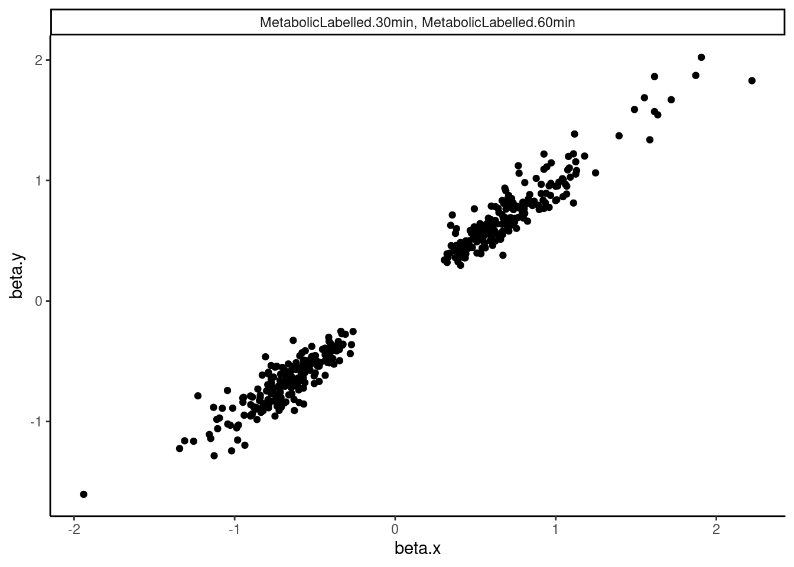
dat.tidy.for.cor %>%
filter(pheno_class_name == "Splicing (leafcutter.YRI.Subset), Splicing (leafcutter.YRI.Subset)") %>%
ggplot(aes(x=beta.x, y=beta.y)) +
geom_point() +
facet_wrap(~pheno_class_name) +
theme_classic()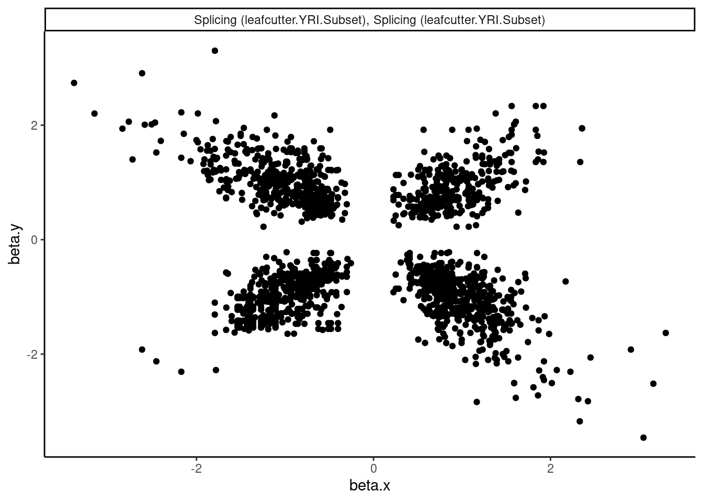
dat.tidy.for.cor %>%
ggplot(aes(x=beta.x, y=beta.y)) +
geom_point(alpha=0.05) +
facet_wrap(~pheno_class_name) +
theme_classic()Ok wow. That is nice. H3K27Ac beta values are very strongly positively correlated with eQTL betas, as expected. We can look at other pairs of traits too, and if there is an effect, I think this is a very powerful way to assess it. But unsurprisingly, the way we have quantified splicing here with leafcutter, splicing is not really obviously correlated with anything, since a leafcutter intron excision ratio PSI that goes up for one intron necessarily means some other introns went down. Perhaps if we looked at intron retention, the effects would be more interpretable. That will be on the future to do list once we get better chRNA-seq data.
Also, let’s replot these as a clustered heatmap for matrix of correlation coefficients.
library(RColorBrewer)
# my_palette <- colorRampPalette(c("blue", "black", "yellow"))(n = 1000)
dat.tidy.for.cor %>%
group_by(pheno_class_name) %>%
summarise(cor = cor.test(beta.x, beta.y, method="pearson")$p.value) %>%
separate(pheno_class_name, into=c("PhenotypeClass1", "PhenotypeClass2"), sep = ", ")# A tibble: 31 x 3
PhenotypeClass1 PhenotypeClass2 cor
<chr> <chr> <dbl>
1 Expression (chRNA) Expression (Geuvadis) 1.27e- 5
2 Expression (chRNA) Expression (YRI.Subset) 3.07e- 5
3 Expression (chRNA) H3K27AC 2.18e- 6
4 Expression (chRNA) H3K4ME3 1.05e- 3
5 Expression (chRNA) MetabolicLabelled.30min 1.79e- 8
6 Expression (chRNA) MetabolicLabelled.60min 3.96e- 7
7 Expression (chRNA) Splicing (leafcutter.YRI.Subset) 6.29e- 1
8 Expression (Geuvadis) Expression (YRI.Subset) 0.
9 Expression (Geuvadis) H3K27AC 0.
10 Expression (Geuvadis) H3K4ME3 2.47e-177
# … with 21 more rowsdat.cor <- dat.tidy.for.cor %>%
group_by(pheno_class_name) %>%
summarise(cor = cor(beta.x, beta.y, method="spearman")) %>%
separate(pheno_class_name, into=c("PhenotypeClass1", "PhenotypeClass2"), sep = ", ")
dat.cor %>%
rename(PhenotypeClass1=PhenotypeClass2, PhenotypeClass2=PhenotypeClass1) %>%
bind_rows(dat.cor) %>%
distinct(.keep_all=T) %>%
# mutate(cor = as.numeric(cor)) %>%
pivot_wider(names_from = "PhenotypeClass1", values_from = "cor", values_fill=NA, names_sort=T) %>%
column_to_rownames("PhenotypeClass2") %>%
as.matrix() %>%
# heatmap.2(trace="none", col=brewer.pal(51,"Spectral"))
heatmap.2(trace="none", col=colorpanel(75, "blue", "black", "yellow"), cexRow = 1, cexCol = 1, offsetRow=0, offsetCol = 0, margins=c(11,11), dendrogram = "column")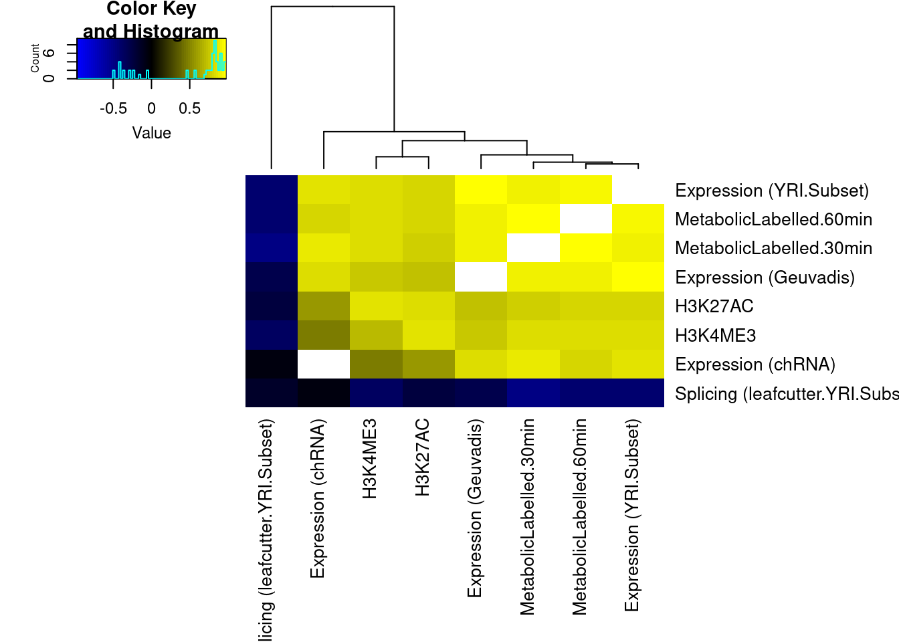
The slight negative correlation between leafcutter splicing and other phenotypes is interesting. I wonder if there is a technical explanation. For example, perhaps many of the colocalizing sQTLs are actually alt TSS, such that the measured decrease in expression if a downstream TSS is used (shorter isoform), results in general upregulation of within-cluster introns which would occur if the cluster had a few introns only present in the long isoform that go down, and the other introns necessarily go up.
Another informative thing would be to look at the distribution of distances between colocalized traits, and the effect sizes between colocalized traits that are close versus far. First let’s plot the distribution of distances for each type of pair of colocalizes traits:
dat.tidy.for.cor %>%
#Add a psueodcount so we can still plot things that are distance=0 overlapping
mutate(Distance_between = Distance_between+1) %>%
ggplot(aes(x=Distance_between)) +
stat_ecdf() +
scale_x_continuous(trans="log10") +
facet_wrap(~pheno_class_name) +
theme_classic()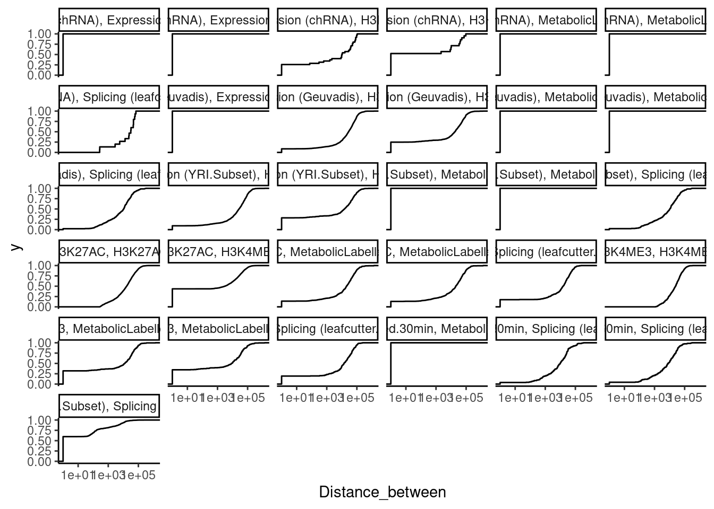
Ok now let’s look at some examples. For example, looking at splicing and H3K4me3 traits that colocalizes, if we look at the ones that are close together (eg <1000bp), do we see any positive correlation like what might be expected with EMATs?
dat.tidy.for.cor %>%
filter(pheno_class_name == "H3K4ME3, Splicing (leafcutter.YRI.Subset)") %>%
mutate(Distance_between = Distance_between+1) %>%
ggplot(aes(x=Distance_between)) +
stat_ecdf() +
scale_x_continuous(trans="log10") +
facet_wrap(~pheno_class_name) +
theme_classic()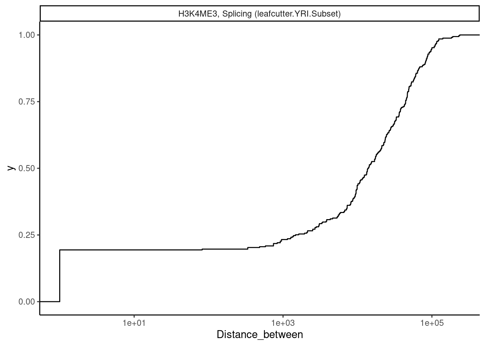
dat.tidy.for.cor %>%
filter(pheno_class_name == "H3K4ME3, Splicing (leafcutter.YRI.Subset)") %>%
mutate(DistanceClass = cut(Distance_between, breaks = c(0, 1, 500, 1000, 5000, 10000, Inf), include.lowest = T, right=T)) %>%
mutate(DistanceClass = recode(DistanceClass, `[0,1]` = "Overlapping")) %>%
ggplot(aes(x=beta.x, y=beta.y)) +
geom_point() +
# geom_smooth(method='lm') +
facet_wrap(~DistanceClass) +
theme_classic()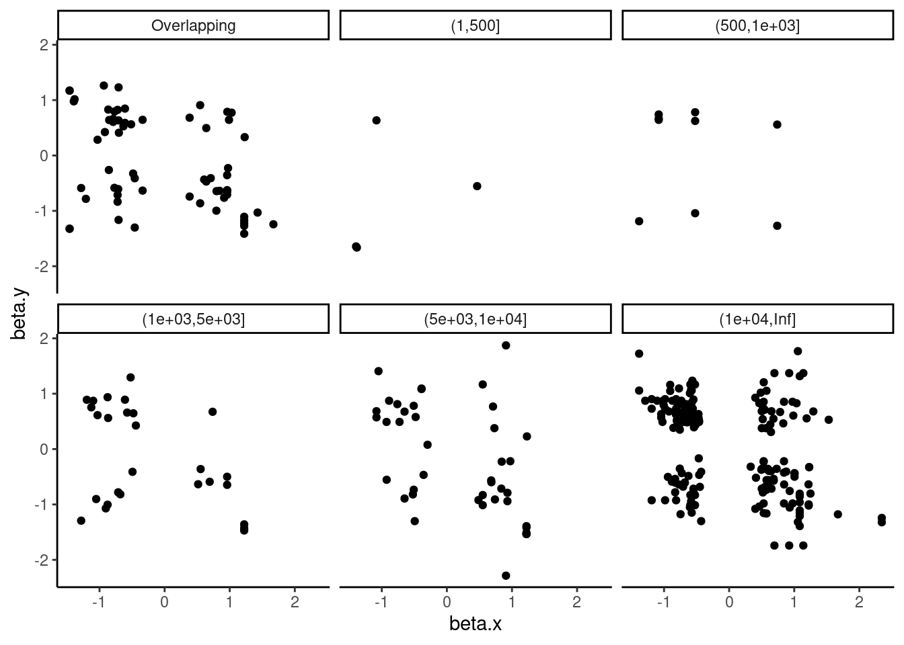
Not so much. Again, maybe we need to look at intron retention instead of leafcutter splicing.
Let’s explore how leafcutter splicing phenotypes are correlated with the same plots…
dat.tidy.for.cor %>%
filter(pheno_class_name == "Splicing (leafcutter.YRI.Subset), Splicing (leafcutter.YRI.Subset)") %>%
mutate(Distance_between = Distance_between+1) %>%
ggplot(aes(x=Distance_between)) +
stat_ecdf() +
ylab("Cumulative fraction") +
xlab("Distance b/n features") +
scale_x_continuous(trans="log10") +
facet_wrap(~pheno_class_name) +
theme_classic()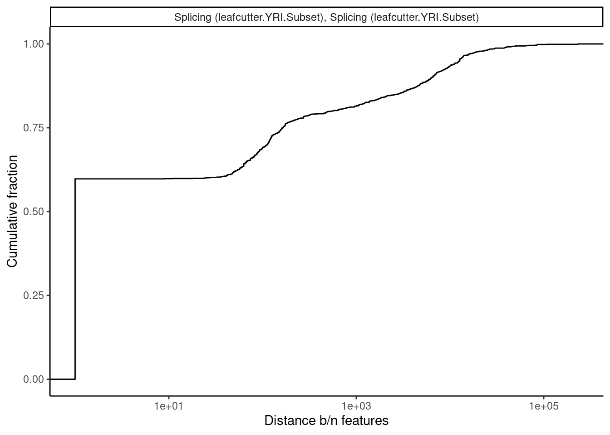
dat.tidy.for.cor %>%
filter(pheno_class_name == "Splicing (leafcutter.YRI.Subset), Splicing (leafcutter.YRI.Subset)") %>%
mutate(DistanceClass = cut(Distance_between, breaks = c(0, 1, 500, 1000, 5000, 10000, Inf), include.lowest = T, right=T)) %>%
mutate(DistanceClass = recode(DistanceClass, `[0,1]` = "Overlapping")) %>%
ggplot(aes(x=beta.x, y=beta.y)) +
geom_point(alpha=0.3) +
# geom_smooth(method='lm') +
facet_wrap(~DistanceClass) +
theme_classic()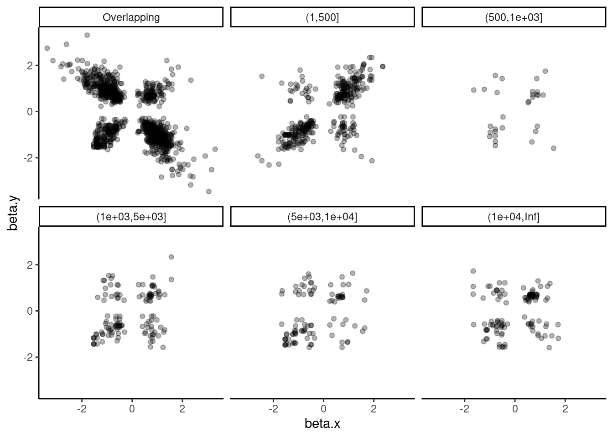
Ok that actually sort of makes sense… Within a single molecule, overlapping introns are mutually exclusive and we see that they are anticorrelated. Also, for introns that are 1-500 bp apart (the size of typical exons), effect sizes are actually positively correlated, which might reflect QTLs for cassette exons.
Lastly, let’s check H3K27AC mark and gene expression. And also H3K27AC vs H3K4ME3
dat.tidy.for.cor %>%
filter(pheno_class_name == "Expression (Geuvadis), H3K27AC") %>%
mutate(Distance_between = Distance_between+1) %>%
ggplot(aes(x=Distance_between)) +
stat_ecdf() +
ylab("Cumulative fraction") +
xlab("Distance b/n features") +
scale_x_continuous(trans="log10") +
facet_wrap(~pheno_class_name) +
theme_classic()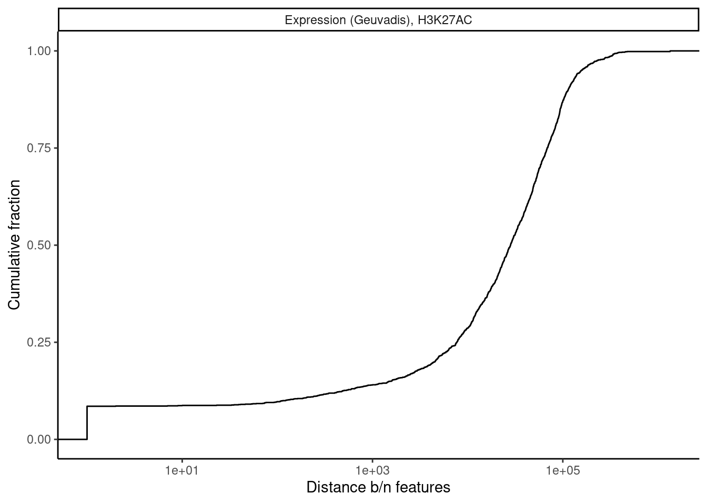
dat.tidy.for.cor %>%
filter(pheno_class_name == "Expression (Geuvadis), H3K27AC") %>%
mutate(DistanceClass = cut(Distance_between, breaks = c(0, 1000, 5000, 10000, 50000, 100000, Inf), include.lowest = T, right=T)) %>%
mutate(DistanceClass = recode(DistanceClass, `[0,1]` = "Overlapping")) %>%
ggplot(aes(x=beta.x, y=beta.y)) +
geom_point(alpha=0.3) +
# geom_smooth(method='lm') +
facet_wrap(~DistanceClass) +
theme_classic()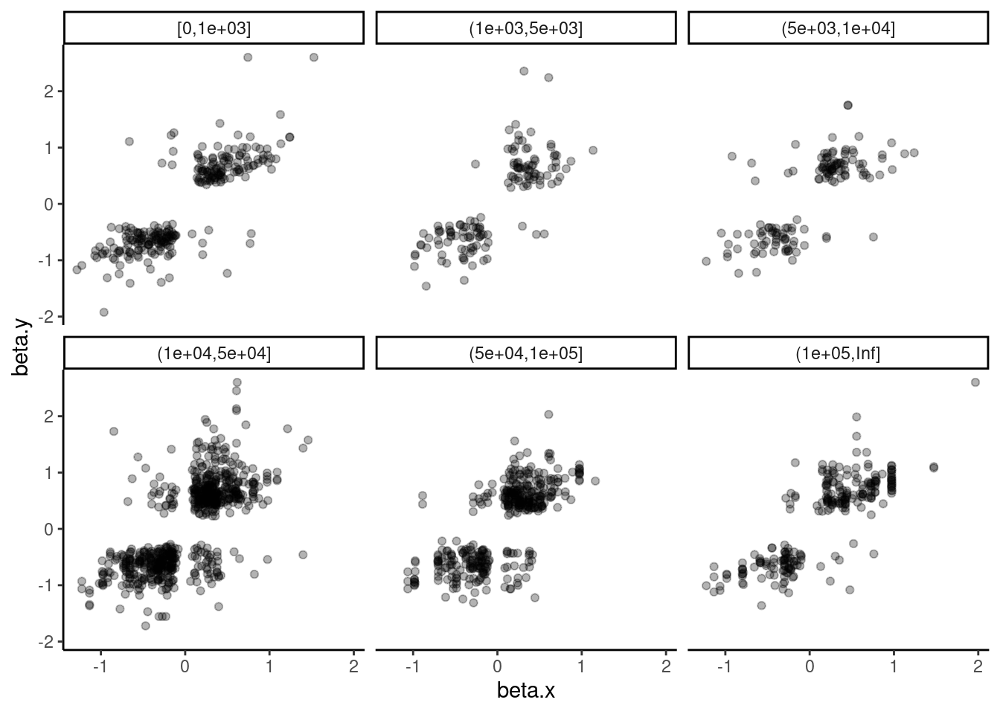
dat.tidy.for.cor %>%
filter(pheno_class_name == "H3K27AC, H3K4ME3") %>%
mutate(Distance_between = Distance_between+1) %>%
ggplot(aes(x=Distance_between)) +
stat_ecdf() +
ylab("Cumulative fraction") +
xlab("Distance b/n features") +
scale_x_continuous(trans="log10") +
facet_wrap(~pheno_class_name) +
theme_classic()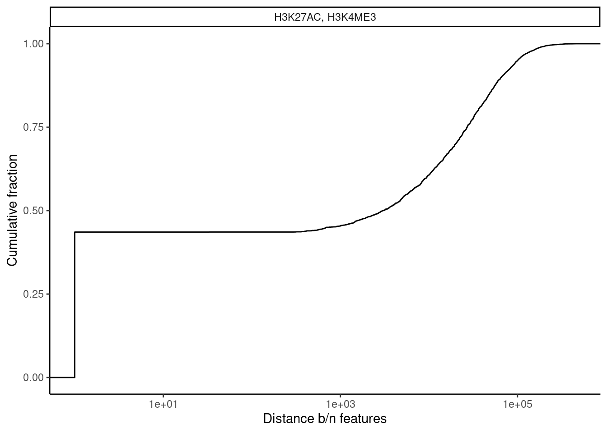
dat.tidy.for.cor %>%
filter(pheno_class_name == "H3K27AC, H3K4ME3") %>%
mutate(DistanceClass = cut(Distance_between, breaks = c(0, 1000, 5000, 10000, 50000, 100000, Inf), include.lowest = T, right=T)) %>%
mutate(DistanceClass = recode(DistanceClass, `[0,1]` = "Overlapping")) %>%
ggplot(aes(x=beta.x, y=beta.y)) +
geom_point(alpha=0.3) +
# geom_smooth(method='lm') +
facet_wrap(~DistanceClass) +
theme_classic()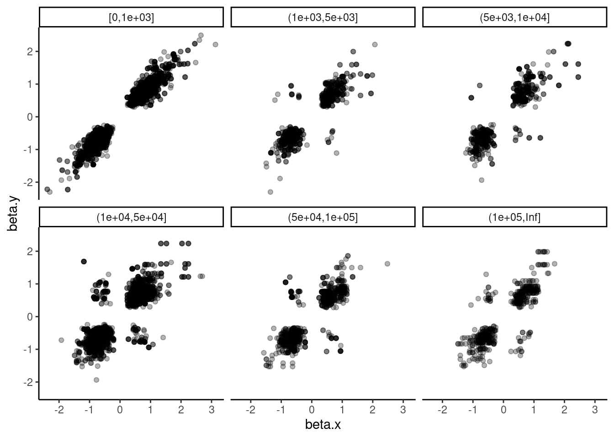
sessionInfo()R version 3.6.1 (2019-07-05)
Platform: x86_64-pc-linux-gnu (64-bit)
Running under: Scientific Linux 7.4 (Nitrogen)
Matrix products: default
BLAS/LAPACK: /software/openblas-0.2.19-el7-x86_64/lib/libopenblas_haswellp-r0.2.19.so
locale:
[1] LC_CTYPE=en_US.UTF-8 LC_NUMERIC=C
[3] LC_TIME=en_US.UTF-8 LC_COLLATE=en_US.UTF-8
[5] LC_MONETARY=en_US.UTF-8 LC_MESSAGES=en_US.UTF-8
[7] LC_PAPER=en_US.UTF-8 LC_NAME=C
[9] LC_ADDRESS=C LC_TELEPHONE=C
[11] LC_MEASUREMENT=en_US.UTF-8 LC_IDENTIFICATION=C
attached base packages:
[1] stats graphics grDevices utils datasets methods base
other attached packages:
[1] RColorBrewer_1.1-2 data.table_1.13.2 gplots_3.0.1.1
[4] forcats_0.4.0 stringr_1.4.0 dplyr_0.8.3
[7] purrr_0.3.4 readr_1.3.1 tidyr_1.1.0
[10] tibble_2.1.3 ggplot2_3.3.3 tidyverse_1.3.0
loaded via a namespace (and not attached):
[1] Rcpp_1.0.5 lubridate_1.7.4 lattice_0.20-38
[4] gtools_3.8.1 utf8_1.1.4 assertthat_0.2.1
[7] rprojroot_2.0.2 digest_0.6.20 R6_2.4.0
[10] cellranger_1.1.0 backports_1.1.4 reprex_0.3.0
[13] evaluate_0.14 httr_1.4.1 pillar_1.4.2
[16] rlang_0.4.10 readxl_1.3.1 rstudioapi_0.10
[19] gdata_2.18.0 whisker_0.3-2 R.oo_1.22.0
[22] R.utils_2.9.0 rmarkdown_1.13 labeling_0.3
[25] munsell_0.5.0 broom_0.5.2 compiler_3.6.1
[28] httpuv_1.5.1 modelr_0.1.8 xfun_0.8
[31] pkgconfig_2.0.2 htmltools_0.3.6 tidyselect_1.1.0
[34] workflowr_1.6.2 fansi_0.4.0 crayon_1.3.4
[37] dbplyr_1.4.2 withr_2.4.1 later_0.8.0
[40] R.methodsS3_1.7.1 bitops_1.0-6 grid_3.6.1
[43] nlme_3.1-140 jsonlite_1.6 gtable_0.3.0
[46] lifecycle_0.1.0 DBI_1.1.0 git2r_0.26.1
[49] magrittr_1.5 scales_1.1.0 KernSmooth_2.23-15
[52] cli_2.2.0 stringi_1.4.3 farver_2.1.0
[55] fs_1.3.1 promises_1.0.1 xml2_1.3.2
[58] ellipsis_0.2.0.1 generics_0.0.2 vctrs_0.3.1
[61] tools_3.6.1 glue_1.3.1 hms_0.5.3
[64] yaml_2.2.0 colorspace_1.4-1 caTools_1.17.1.2
[67] rvest_0.3.5 knitr_1.23 haven_2.3.1